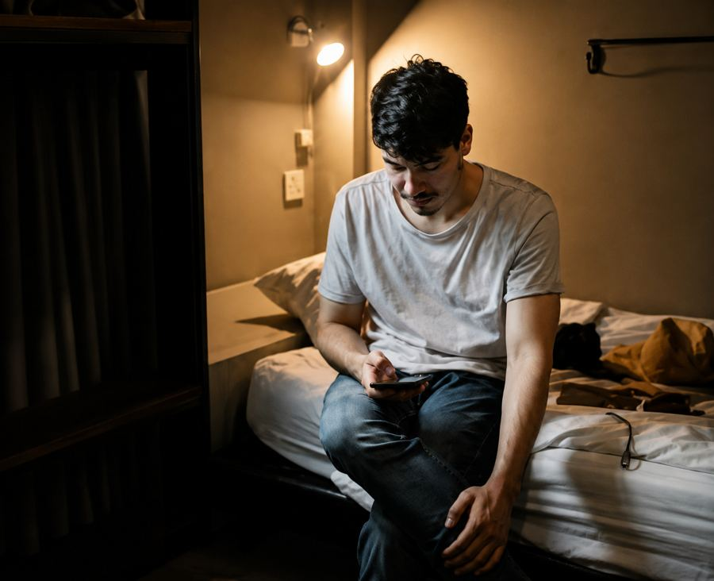
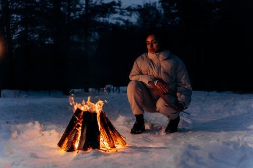
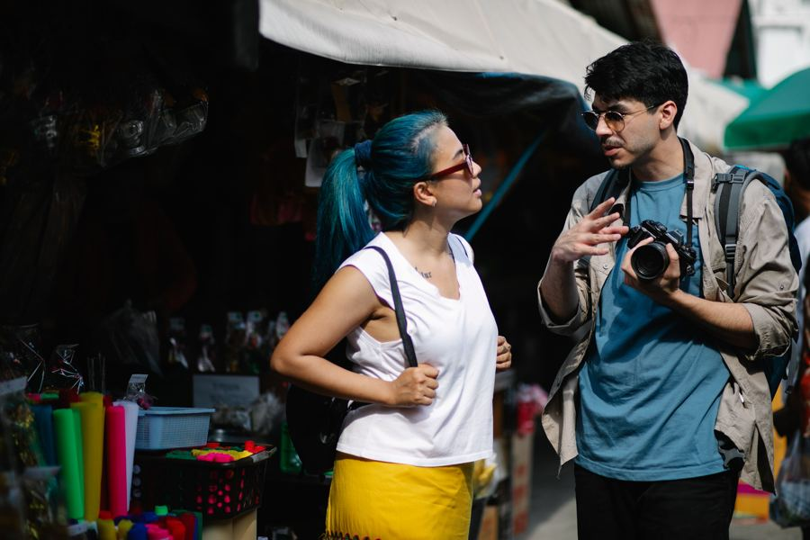

Aptis Speaking
Part 1: In this part, I am going to ask you three short questions about yourself and your interests. You will have 30 seconds to reply to each question.
Yesterday I watched a film on TV. It was a cartoon, called “Tom and Jerry”. It was very funny. It helped me relax after a busy day and share happy moments with my family. My favorite character is Tom because he never gives up. I sometimes watch this cartoon again when I feel stressed. It always makes me smile.
My favourite film star is Jackie Chan. He is from Hongkong. He is very handsome. I really like his movies because they are funny. He is also very talented because he does his own stunts in films. I have watched many of his movies with my brother. He always makes me laugh a lot.
Halong Bay is a famous place in Vietnam. It’s in Quang Ninh. It’s very beautiful and famous. Here we can swim in the sea, climbed the mountain. I visited there with my family two years ago. The scenery was really amazing and I took a lot of photos. I would love to go back there someday.
Part 2: In this part, I'm going to ask you to describe a picture. Then I will ask you two questions about it. You will have 45 seconds for each response.
1. Describe the picture => In this picture, I can see two women. They are about 30. I think they are friends. They are standing on the street with many shopping bags. Maybe they have left a shop. They look happy. In the background, I can see some buildings. The weather is very nice and perfect for outdoor activities. I like this picture because I love shopping. |
2. What do you usually use your mobile phone for?
=> I usually use my mobile phone to do many things. I can call my family, chat with my friends and watch videos. It is fast and convenient. Besides, I can take photos, pay for the bills and watch movies or listen to music. It is really useful. I usually use it every day, even at work. It saves me a lot of time and effort. Without my phone, I would feel a bit lost.
3. Do you think smartphones are making people less social in real life?
=> Yes, I think so. Some people spend too much time on their phones and don’t have time for other things. It’s not good for their health and it can reduce social interaction. For example, my cousin often checks his phone during meals. I think people should try to talk more in person. It would make relationships stronger.
Part 3: In this part, I'm going to ask you to compare two pictures, and I will then ask you two questions about them. You will have 45 seconds for each response.
1. Tell me what you can see in these two pictures.


=> The two pictures show people in different places at night.
First picture, I can see a man in a room. He is sitting on his bed and use his mobile phone.
In the second picture, I can see a woman with a fire in the forest. It is dark. The weather is very cold because I can see a lot of snow on the ground and the woman is wearing warm clothes. She is looking at the fire. Maybe she is thinking.
The people in the two pictures look bored and lonely. The man seems relaxed at home, while the woman looks more thoughtful outside. I think both pictures show different ways people spend their evenings. It is interesting to compare them.
2. Do you think getting enough sleep is important?
=> Yes, I do. Getting enough sleep is very important for both mental and physical health. It helps people stay focused and healthy. If we don’t get enough sleep, we will feel tired. Besides, it can cause some health problems. For example, I always feel sleepy and cannot concentrate at work when I sleep late. I try to go to bed early every night now. Good sleep really improves my mood.
3. Would you find it attractive to spend the night in places like the ones shown in the pictures?
=> Both places have different attractions, depending on people’s interests. Some people like spending time indoors because it is safe. They can watch movies or listen to music.
Some people like spending time outdoors because they can enjoy fresh air. Personally, I would prefer staying indoors because I do not like cold weather. However, sleeping outdoors once could be a fun experience. It really depends on the season.
Part 4: In this part, I'm going to show you a picture and ask you three questions. You will have one minute to think about your answers before you start speaking. You will have two minutes to answer all three questions.

Tell me about a time when you met or talked to a foreigner.
Why do some people feel shy or nervous when communicating with strangers from other countries?
Do you think interacting with people from different cultural backgrounds is important?
=> Regarding the first question, today I'm going to talk about a time when I talked to a foreigner. Last year, I met a tourist in Hanoi. He was from England. We talked about Vietnamese food and famous places. It was a very interesting experience. I was a little nervous at first, but he was very friendly to me. We even exchanged phone numbers and still keep in touch.
Turning to the second question, some people feel shy because they are afraid of making mistakes. They also worry that they cannot speak English well. Also, some people do not practice speaking English very often. This makes them feel less confident.
About the last question, I think interacting with people from different cultural backgrounds is very important. It helps people learn new cultures, improve their communication skills and make new friends. It also helps reduce misunderstandings between people from different countries. I think everyone should try to learn about other cultures.